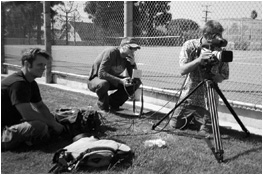
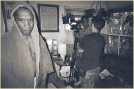

Production
In late 2004, Eric and Brett traveled to Los Angeles to meet with their pal, Lionel Mark Smith, about a small role they had written for him in 4Vienna. They had already known him to be an outstanding actor, but during the visit came to know Lonnie as an outstanding human being who they immediately gravitated towards as a potential artistic collaborator in something bigger. The two guys reveled in Lonnie’s stories of being in the acting biz for thirty years, found common ground in philosophy and politics, and were inspired by his personality and courage. So they decided to ditch the “small role” and instead work with him on a character that was inspired by his life and the crossroads we all come to. Larry (the actor) was born.
After months of writing in Boston, the duo returned to LA for production in the fall of ’05. The shoot lasted a week. Scotty (our incomparable Director of Photography), Eric, and Brett worked with Lonnie for a few days of rehearsals and blocking…and Lonnie did the rest. The four days of the shoot in and around Lonnie’s Inglewood abode went off without a hitch, thanks for the most part to the incredible preparation from the veteran actor, who absolutely nailed over 45 pages of straight dialogue. Team Bootleg wasn’t surprised by his professionalism, but day in and day out, Lonnie still blew them away with the truth he brought to the character. Poydar was awestruck by Lonnie’s performance and likened his direction to that of a phrase heard by teammates of Michael Jordan: “Give Michael the ball, and get out of the way.”
Copyright 2008, Bootleg Productions, LLC. All rights reserved.